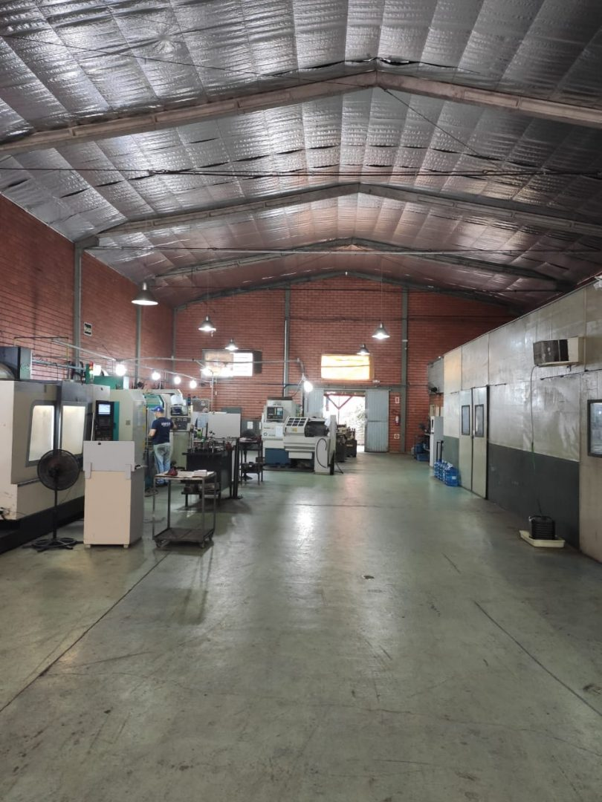
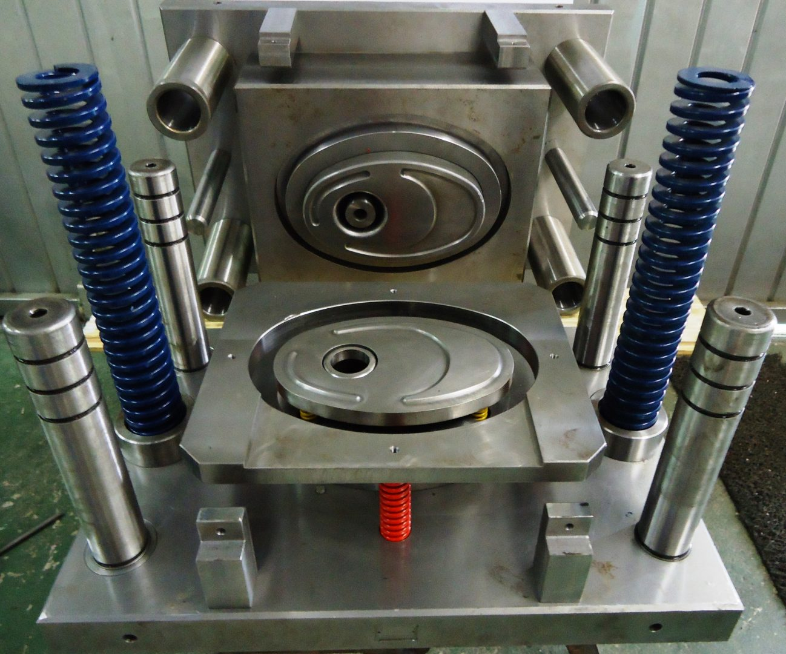
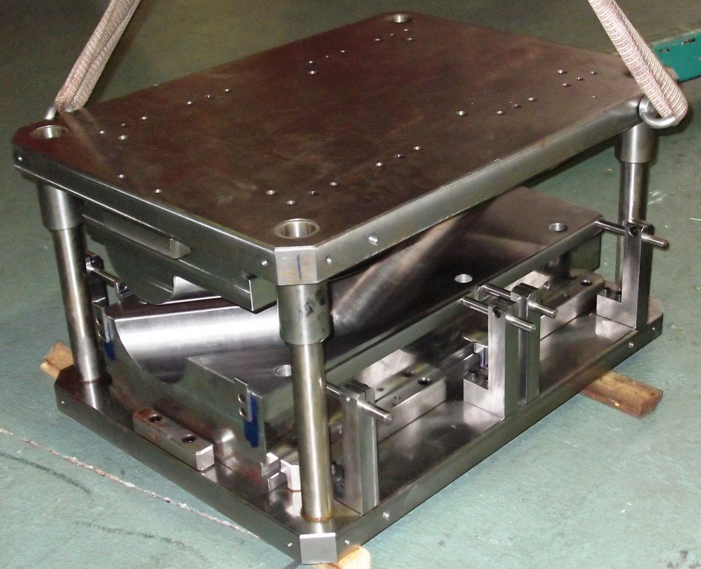
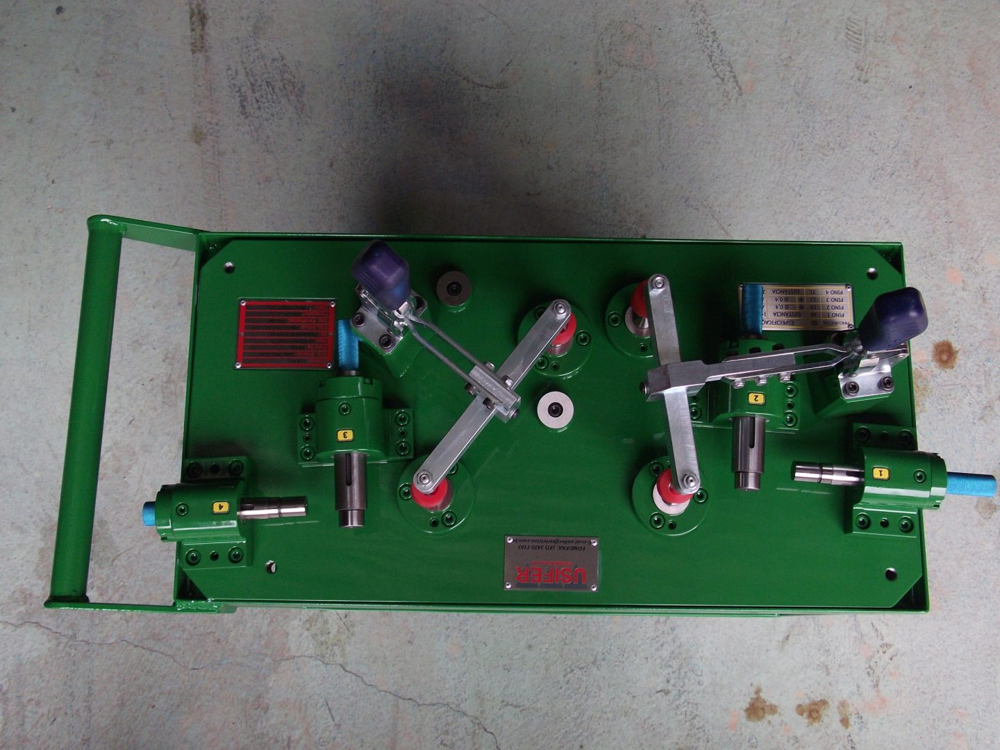
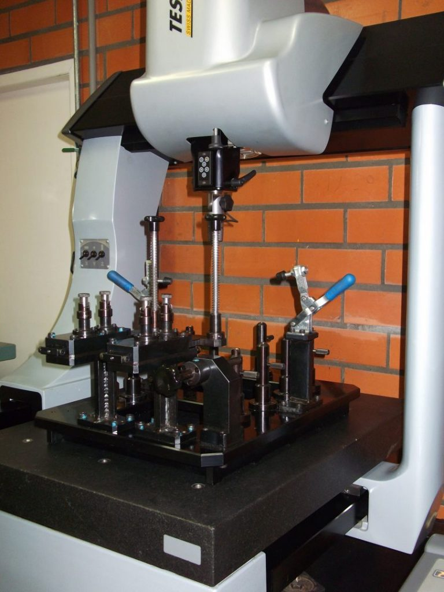
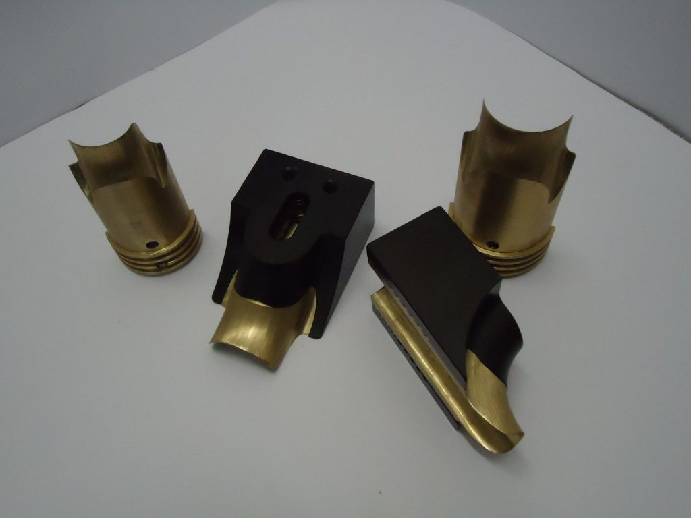
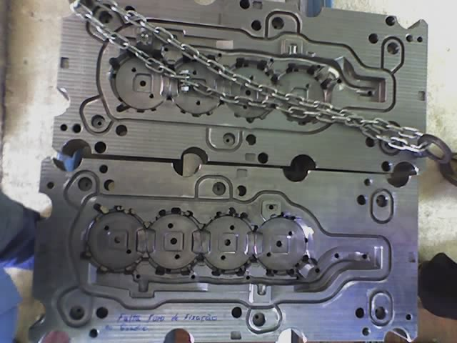
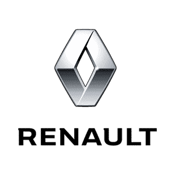
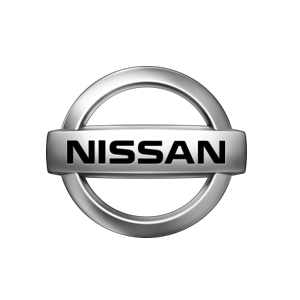
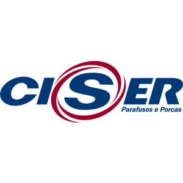

Dispositivos, ferramental e usinagem técnica de precisão, com engenharia própria para o que sua produção exige.

Desde a fundação em 2004, a Usifer investe em tecnologia de última geração e na especialização da equipe para acompanhar as exigências do mercado e estar entre os líderes nacionais do segmento.
Com equipe de engenharia própria, desenvolvemos internamente soluções para a indústria metal mecânica, automotiva, de eletrodomésticos e de máquinas e implementos agrícolas.
De dispositivos sob medida a ferramental completo — tudo desenvolvido pela nossa própria engenharia.

Torneamento e fresamento 2D/3D CNC, retífica plana e cilíndrica, eletroerosão a fio e por penetração.

Curvar, expandir, conformar e estampar — para escapamentos, exaustão e móveis tubulares.

Fixação mecânica e hidráulica para centros CNC, com repetibilidade e rapidez de preparação.

Dispositivos GD&T, calibradores, gages e berços para equipamentos de medição 3D, com certificação RBC.

Reafiação de insertos para curvadeiras de tubo, devolvendo precisão sem comprar peça nova.

Dispositivos de montagem, preparação para soldagem e manutenção/nacionalização de peças.
Mais de duas décadas desenvolvendo soluções de ferramentaria para a indústria.
Experiência acumulada atendendo clientes de todos os portes e segmentos.
Rastreabilidade certificada para dispositivos de controle de qualidade.
Estrutura própria em Pirabeiraba, com linha completa de máquinas CNC.



Desde a fundação, a Usifer investe continuamente em tecnologia de última geração e na especialização da equipe — hoje com uma linha completa de centros de usinagem CNC, tornos, fresadoras, retíficas e eletroerosão.
O resultado é uma carteira de clientes que inclui nomes como Schulz, Renault e Nissan — fabricantes que não abrem mão de precisão e rastreabilidade.
Resposta direta pelo WhatsApp, sem formulário e sem espera.